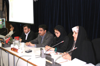
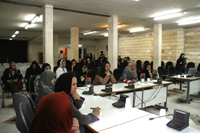
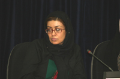

|
|
میزگرد شاخه زنان جبهه مشارکت: ترویج چندهمسری؛ مقابله با برابرخواهی زنان ایرانی
چهار شنبه25 اردیبهشت 1387
عکس : میرا قربانی فر
تغییر برای برابری- محبوبه حسین زاده:شاخه زنان جبهه مشارکت به مناسبت 25اردیبهشت ماه، روز جهانی خانواده،میزگرد نقدی بر سریال"پیامک از دیار باقی" را برگزار کرد. سریال پیامک از دیار باقی یکی از آخرین کارهای رسانه ملی برای موجه جلوه دادن بحث تعدد زوجات است که در در ایام نوروز امسال از صدا و سیما پخش شد.

مسعود آبیار، مشاور خانواده، در این میزگرد رواج چندهمسری از سوی صداو سیما را موضع دفاعی در برابر نهضت های برابری خواهانه زنان در جامعه ایرانی دانست و گفت: من این سریال ها و سیاست گذاری ها برای ترویج تعدد زوجات را مقابله با پیشروی سنگر به سنگر زنان در عرصه جامعه می دانم. مسلما پیشروی زنان و دختران برای برخی که به هژمونی مردانه و مردسالاری اعتقاد دارند ایجاد نگرانی می کند و به این نگرانی به شکل های مختلف واکنش نشان می دهند که حالا این واکنش ممکن است با ناآگاهانه ترین شکل صورت گیرد.
وی گفت: چندزنی موضوع نگران کننده ای در جامعه ما نیست چون تاریخ مصرف این نوع خانواده ها در جامعه ما گذشته است و هم اکنون در کشور ما بیشتر مساله خیانت و ارتباطات پنهان وجود دارد . اما ما امروز با یک تصویر پاره پاره و اسکیزوفرن از خانواده در رسانه ملی مواجه هستیم؛ تصویری که در جامعه ایجاد آنمی می کند.
دکتر امید علی احمدی، جامعه شناس، نیز گفت: ظرفیت تشکیل و افزایش خانواده های چندهمسر در ایران از بین رفته است و ما با نوع جدیدی از خانواده روبرو هستیم که تعاریف آن با گذشته خیلی متفاوت است. در شرایط امروز ایران زنان به همسر دوم شدن تن نمی دهند مگر این که شرایط اقتصادی و اجتماعی زنان و موقعیت حقوقی آنان در جامعه بدتر شود و گروه ها و سازمان های فعال در دفاع از حقوق زنان ضعیف تر شوند.

وی افزود:حتی در سالیان بسیار دور هم هرجا از چندزنی صحبت شده و در داستانها و ترانه های قدیمی هم هرجا در این مورد مطلبی نقل شده به نوعی زیرکانه و نقادانه به مشکلاتی که مردان دارای چندهمسر مواجه هستند پرداخته شده و این مردان و زنانی که همسر دوم می شده اند مورد مسخره قرار می گرفته اند.
علی احمدی ادامه داد: امروز دیگر آن تصویر سنتی از زنان و تفکیک جنسیتی و بازتولید الگوهای سنتی جوابگو نیست و اگر وضع به همین صورت پیش برود مسلما مسائل ما و خانواده های ایرانی در آینده جدی تر از امروز خواهد بود. چندزنی دغدغه امروز جامعه ما نیست که این گونه ترویج می شود مشگل اصلی ما در تصویر سازی از تفکیک جنسیت ها و نقش آنان در جامعه است.
در بروشورهای توزیع شده در مراسم از سوی شاخه زنان جبهه مشارکت آمده است: تلویزیون ایران چندی است در برنامه های مختلف به بهانه های مختلف بحث تعدد زوجات را پیش می کشد و با موجه جلوه دادن این مساله، سعی در فضاسازی روانی و انگاره سازی مثبت دارد. پس از لایحه پرسروصدای دولت در رفع موانع ازدواج برای مردانی که دارای تمکن مالی هستند، به نظر می رسد در ساختار سریال های تلویزیونی صداوسیما گراشیش به از میان بردن تصویر منفی این عمل در اذهان مخاطب نیز مورد توجه قرار گرفته است.»

روز 15ماه می مصادف با 26اردیبهشت در شهویورماه سال 1993 از سوی مجمع عمومی سازمان ملل متحد به عنوان روز جهانی خانواده اعلام شد. موضوع امسال روز جهانی خانواده با هدف تاکید بر نقش پدر در خانواده و ضرورت مسئولیت پذیری وی و چالش های همراه آن با عنوان " پدران و خانواده ها؛ مسئولیت ها و چالش ها" نامیده شده است